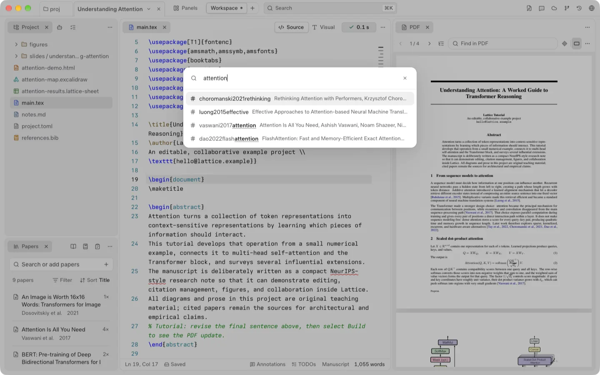
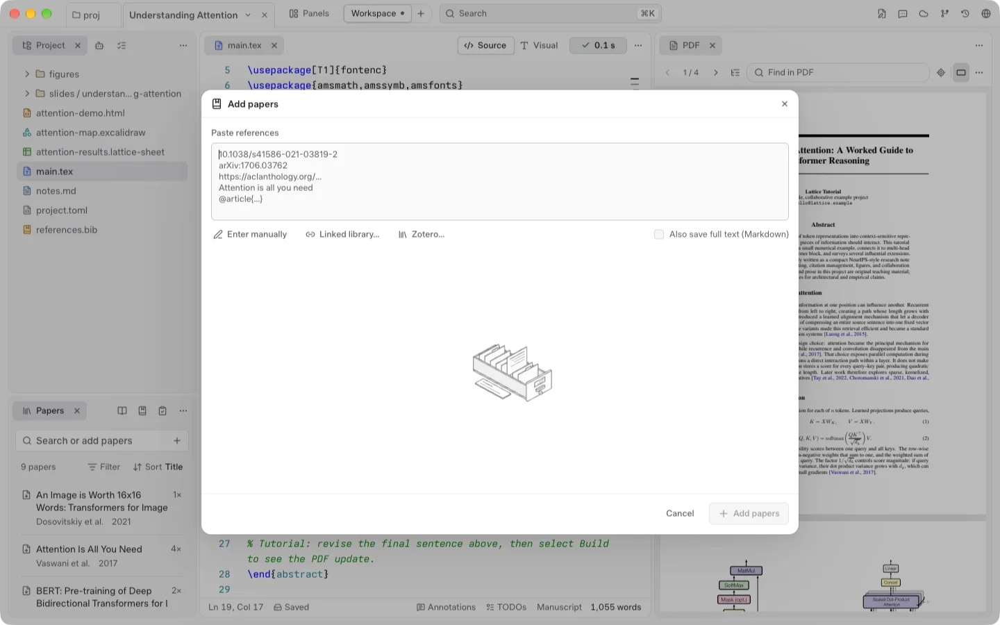

Citations and papers
Cite and reference while you type
⌘⇧KInsert citation: search your bibliography by key, title or author, then press Return. Lattice inserts\cite{key}at the cursor.⌘⇧LInsert reference: search the labels in your project (eq:,fig:,tab:and so on) and insert\ref{…}.- Hover a
\citekey to see the reference it points to, or press⌘⌥Kwith the cursor on it.

The Papers library
The Papers panel (⌘⌥2) holds the papers this project cites, with how many times each is cited. Open one to read it beside your draft, or drag it into the editor to cite it. Filter papers narrows the list, and Sort and group chooses its order and grouping.
To add papers, click + in the Search or add papers box (or the Add papers button in the panel's toolbar), or just paste into that box. Paste anything you have: DOIs, arXiv IDs, links, titles or whole BibTeX entries, one per line. Then choose Add papers (it reads Add 3 papers once Lattice has found them). Lattice looks each one up and writes it into your .bib file.

Other ways in, from the same sheet:
- Enter manually: type the fields yourself.
- Linked library…: link a
.bibexported from Zotero, Paperpile or another manager, and take in its later changes after you review them. - Zotero…: see below.
- Also save full text (Markdown): keep a readable copy of each paper in the project.
Discover literature, beside Add papers, searches literature services for papers to add.
Check references
Check references (in the Papers panel and the command palette) checks every reference against its published record (Semantic Scholar first, then other sources for what it can't answer). Choose Check all, or tick references and choose Check selected. The report sorts them by what each asks of you: a fix to apply, a candidate to review, a check that couldn't finish, and the ones verified. Apply writes one fix into your .bib; Apply all takes every fix that only fills in or publishes an entry, and leaves disputed values to you. The report is kept, so it is there next time.
Zotero
You don't need to change anything in Zotero, and it can be open or closed.
- In Add papers, choose Zotero….
- Open My Library or a folder; turn on Include subfolders to see everything below it.
- Tick the papers you want, or Select all, and choose Add N papers. Papers already in the library show In Papers; you can still tick one to bring in what it lacks, and the button then reads Add PDF, Add annotations or Add PDF and annotations.
Annotations you made on a paper's PDF in Zotero come along into its note (notes/<key>.md), each with a link to its page. Lattice only reads from Zotero; it never writes back. If Lattice can't find your library, choose its folder with Choose Zotero folder…. More detail, including connecting Zotero to the Agent, is in Zotero, Heptabase and the Agent panel.